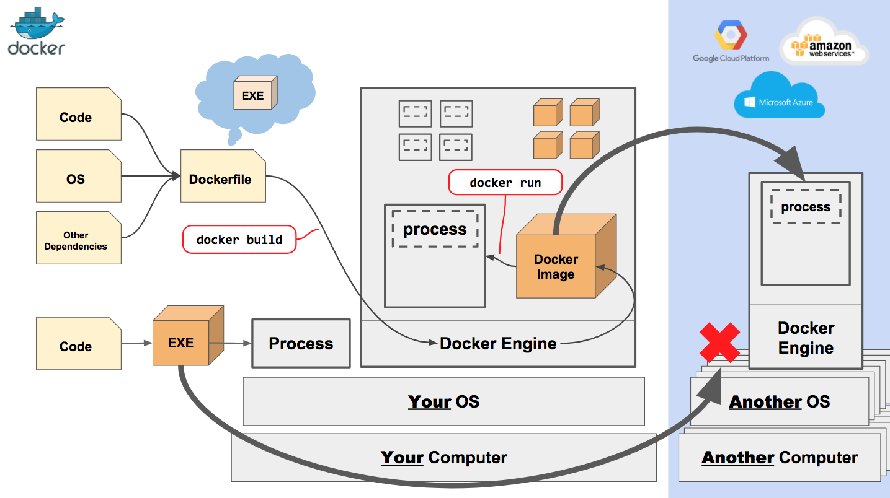
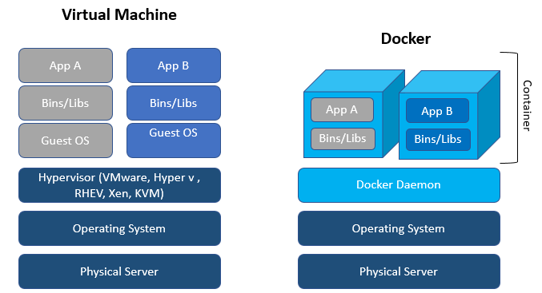

<h1>Ismerkedés a Docker-rel egy nagyobb üzleti példán keresztül</h1>

<h2>Docker alapok</h2>

<br/>
<br/>

<iframe width="560" height="315" src="https://www.youtube.com/embed/aLipr7tTuA4" frameborder="0" allow="accelerometer; autoplay; encrypted-media; gyroscope; picture-in-picture" allowfullscreen></iframe>

<h2>Egy valós példa: Scava</h2>

<p><a href="https://github.com/crossminer/scava-deployment/tree/dev">Docker configuration files for the deployment of Scava platform</a></p>
